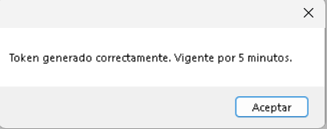
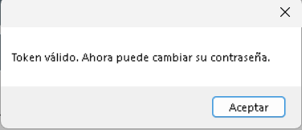
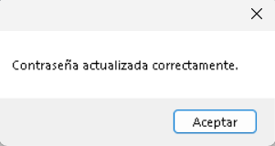

Paso 6: Regresar al login
Para finalizar, presione el botón Regresar para volver a la pantalla de inicio de sesión.

Primero debe ingresar el usuario al que desea recuperar la contraseña.
Luego debe presionar el botón Generar. El sistema creará un token válido por 5 minutos.

Posteriormente debe ingresar el token generado y presionar Verificar token.

Una vez verificado el token, podrá ingresar la nueva contraseña y confirmarla.
Finalmente presione Guardar. El sistema mostrará un mensaje indicando que la contraseña fue actualizada correctamente.

Para finalizar, presione el botón Regresar para volver a la pantalla de inicio de sesión.